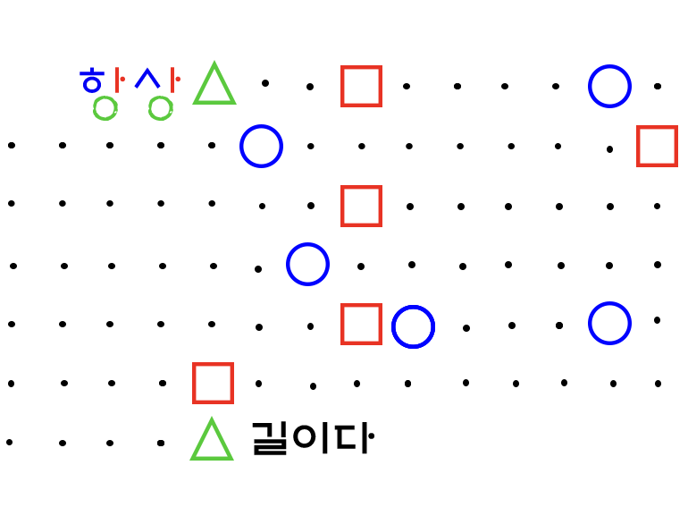

Q. 비석을 보고, 도형이 있는 각 위치의
자음/모음을 조합하여 단어를 만들어
순서대로 적어보자.
[다른 사람의 ( )에 ( )기울여라
그 속에 ( )의 씨앗이 있을 것이다.]
[ 답: O O OO ]

?
입력
이전
×
"항상"의 초성/중성/종성 색깔에 따라
순서대로 각각에 맞는 자음, 모음을 찾아서
단어를 만들면 될 것 같다.
[총학 비대위 공식계정 인스타툰 참고.]
×
오답입니다!
(왼쪽 위 "?" 버튼을 눌러보세요!)